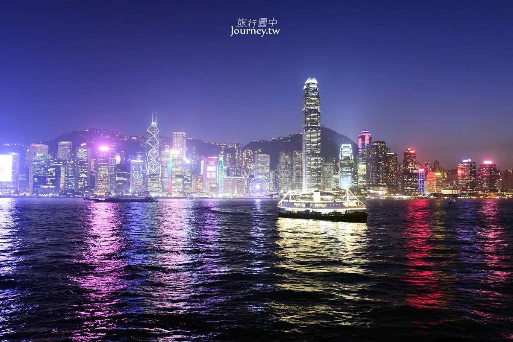
旅程總覽
去程
05:35 高雄國際機場
09:10 香港國際機場
05:35 高雄國際機場
09:10 香港國際機場
回程
18:40 香港國際機場
22:10 高雄國際機場
18:40 香港國際機場
22:10 高雄國際機場
住宿
粵海華美灣際酒店
灣仔區
粵海華美灣際酒店
灣仔區
主軸
維港夜景｜香港美食｜亞洲國際博覽館｜城市巡禮
維港夜景｜香港美食｜亞洲國際博覽館｜城市巡禮
每日行程
DAY 1｜初訪香港・維港夜景
高雄 → 香港 → 灣仔 → 尖沙咀 → 旺角
05:35
高雄國際機場搭乘班機前往香港
09:10
香港國際機場抵達香港
12:09
華嫂冰室港式冰室，推薦絲襪奶茶與菠蘿包
13:29
香港摩天輪中環海濱觀景設施
14:32
K11 MUSEA尖沙咀藝術購物地標
16:36
星光大道維港夜景與李小龍銅像
17:56
女人街旺角夜市購物
香港摩天輪
K11 MUSEA
星光大道
女人街
DAY 2｜大嶼山與百萬夜景
灣仔 → 昂坪 → 天壇大佛 → 太平山
10:13
昂坪360纜車高空俯瞰大嶼山與海景
12:32
天壇大佛香港代表性地標
16:40
山頂纜車 Peak Tram前往太平山欣賞百萬夜景
19:28
甘牌燒鵝人氣港式燒味晚餐
昂坪360
天壇大佛
山頂纜車
太平山夜景
DAY 3｜亞洲國際博覽館
09:54
亞洲國際博覽館展覽與商務交流
20:54
返回飯店休息
亞洲國際博覽館
DAY 4｜亞洲國際博覽館
09:55
亞洲國際博覽館展覽與產業交流
20:54
返回飯店休息
亞洲國際博覽館
DAY 5｜亞洲國際博覽館
09:57
亞洲國際博覽館展覽交流
20:55
返回飯店休息
亞洲國際博覽館
DAY 6｜亞洲國際博覽館
09:54
亞洲國際博覽館最後一日展覽行程
18:52
返回飯店晚上自由活動
亞洲國際博覽館
自由活動｜維港夜景
DAY 7｜香港最後巡禮
灣仔 → 中環 → 銅鑼灣 → 鰂魚涌 → 機場
10:10
蓮香樓傳統港式飲茶
11:56
銅鑼灣百貨商圈購物
15:12
怪獸大廈IG熱門拍照景點
18:40
香港國際機場返回高雄
蓮香樓
銅鑼灣
怪獸大廈
景點照片與介紹
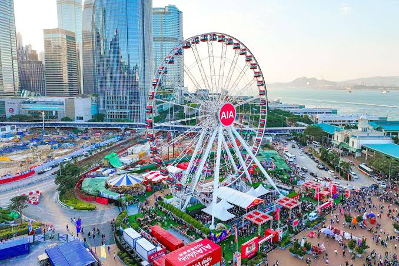
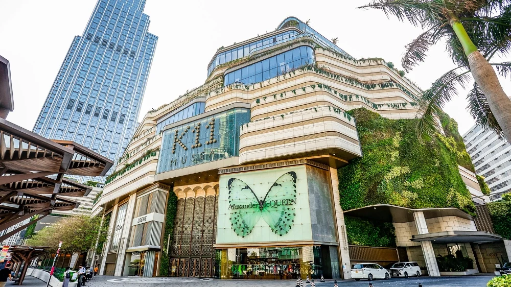
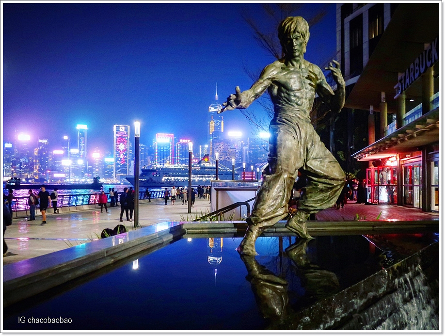
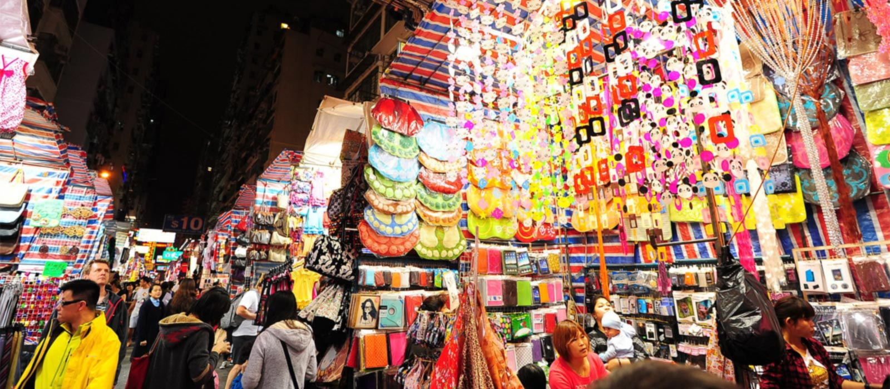
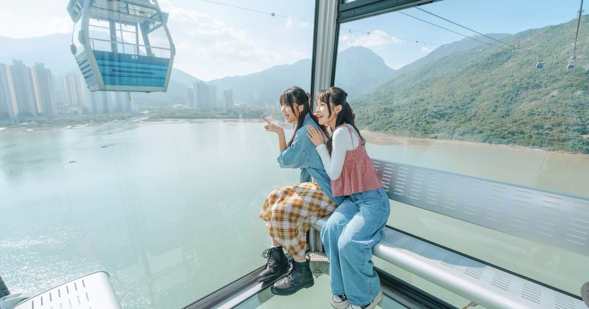
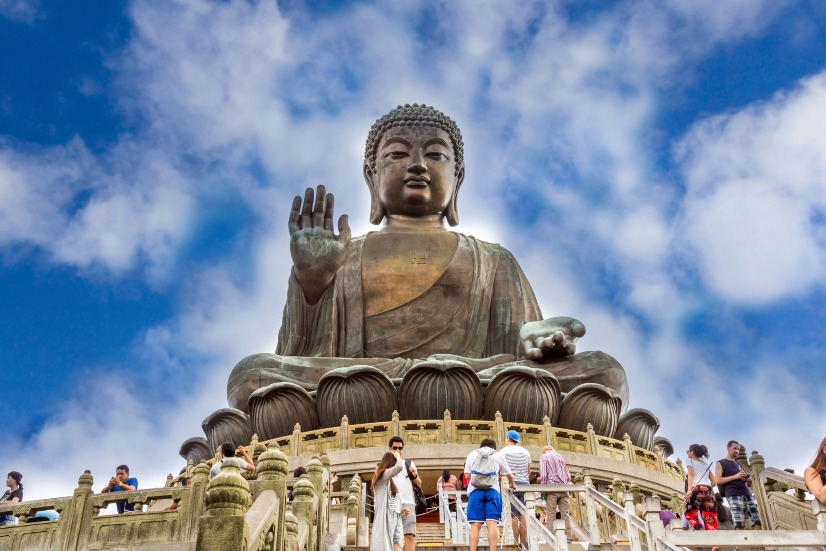
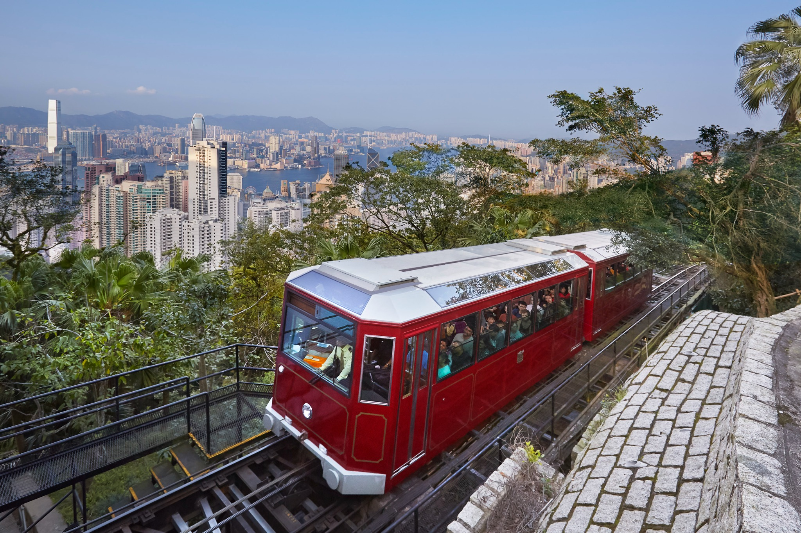
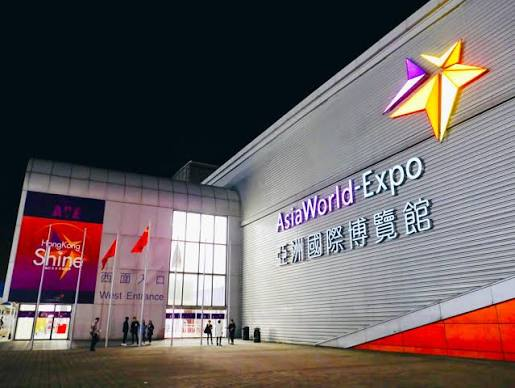
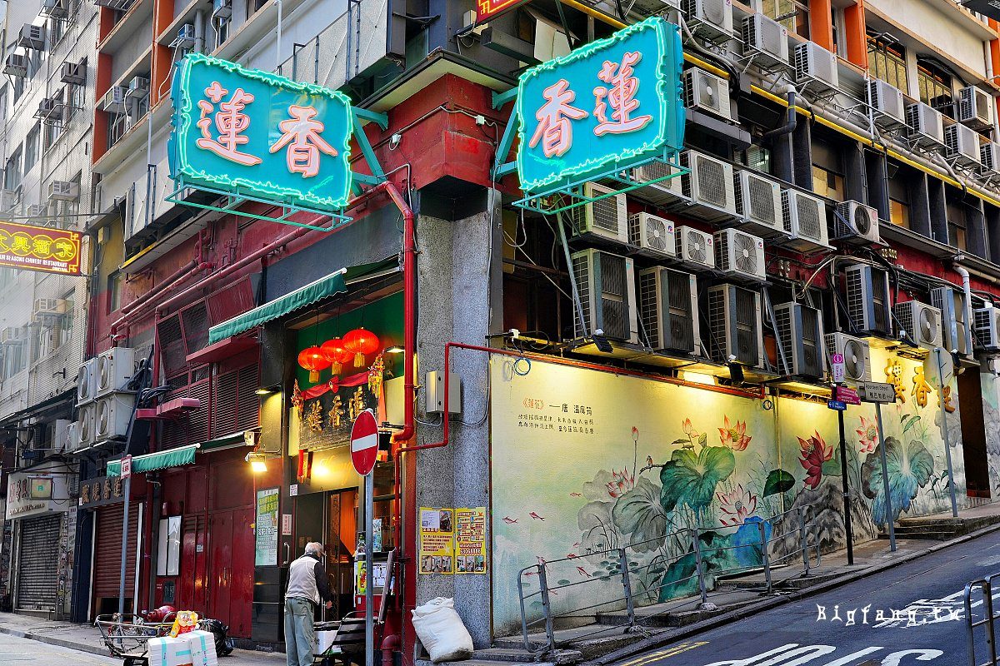
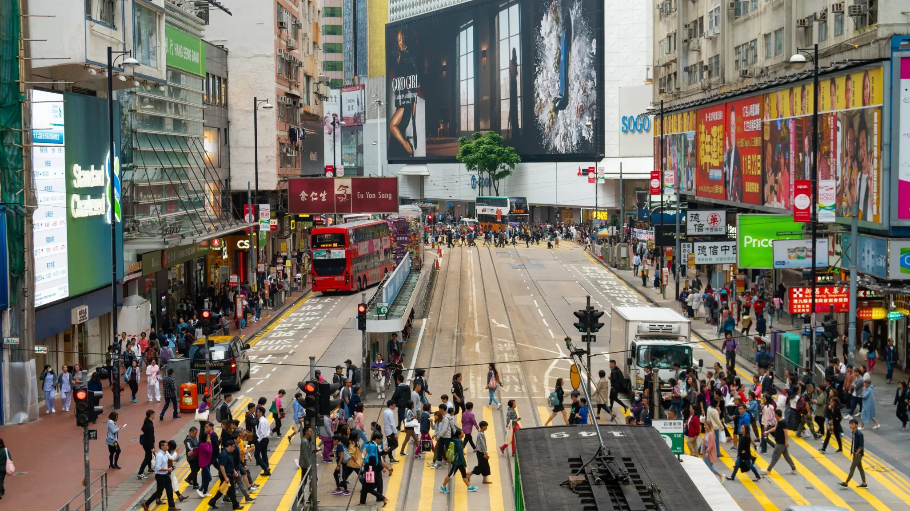
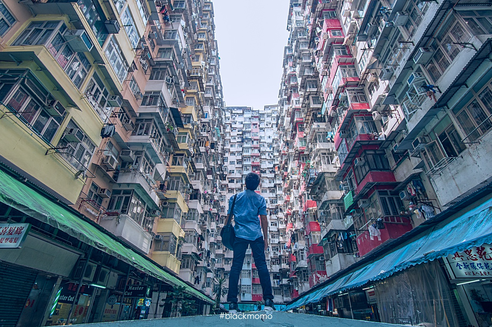
Google Maps 快速導航
住宿資訊
行前準備
✅ 護照、機票、入境資料
✅ 八達通卡、Google Maps
✅ eSIM、行動電源
✅ 英規轉接頭、港幣、信用卡
緊急聯絡
香港緊急電話
999
999
HAVEN提醒
重要文件拍照備份，現金分開放。
重要文件拍照備份，現金分開放。